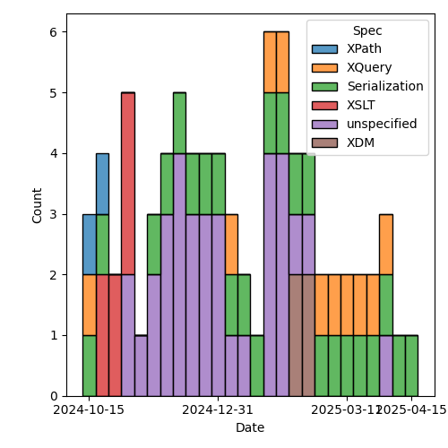
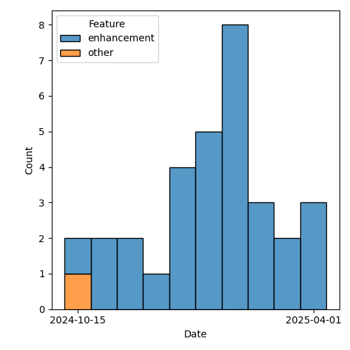

QT4 CG Meeting 118 Minutes 2025-04-22
Meeting index / QT4CG.org / Dashboard / GH Issues / GH Pull Requests
Table of Contents
- Draft Minutes
- Summary of new and continuing actions
[0/10] - 1. Administrivia
- 2. Technical agenda
- 2.1. Review of pull requests
- 2.1.1. PR #1906: 1797 elements-to-maps-conversion-plan function
- 2.1.2. PR #1937: 1936 Mark attribute declarations as form=qualified
- 2.1.3. PR #1933: 1271 fn:validate() function
- 2.1.4. PR #1929: 1725 xsl:mode/@copy-namespaces
- 2.1.5. PR #1928: 1844b Arrow Expressions
- 2.1.6. PR #1926: 1907 method lookup (disallow wildcard selection)
- 2.1.7. PR #1922: 1921 Expand definition of version ranges in XSLT
- 2.1. Review of pull requests
- 3. Any other business
- 4. Adjourned
Draft Minutes
Summary of new and continuing actions [0/10]
[ ]QT4CG-082-02: DN to work with NW to come to agreement on the fn:ranks proposal[ ]QT4CG-107-05: JLO and DN to consider a proposal for system defined records.[ ]QT4CG-112-01: JLO to propose a concrete example that uses “.” in a ~%method~s.[ ]QT4CG-113-02: NW to investigate a way to show extra attributes in the syntax summary.[ ]QT4CG-115-02: JWL to write a few tests for xsl:record[ ]QT4CG-116-01: Add a specific error code for unsupported options on doc and doc-available[ ]QT4CG-116-03: NW to review the star/plus/delta symbols in the ToC. (See 1838)[ ]QT4CG-118-01: MK to make an incorrect type raise an error in #1906[ ]QT4CG-118-02: DN to open an issue about methods in records[ ]QT4CG-118-03: NW to make sure compose/chain and binary are on the agenda for next week
1. Administrivia
1.1. Roll call [10/13]
Regrets: BTW, JK
[X]David J Birnbaum (DB)[X]Reece Dunn (RD)[X]Sasha Firsov (SF)[X]Christian Grün (CG)[ ]Joel Kalvesmaki (JK)[X]Michael Kay (MK)[ ]Juri Leino (JLO)[X]John Lumley (JWL)[X]Dimitre Novatchev (DN)[X]Wendell Piez (WP)[X]Ed Porter (EP)[ ]Bethan Tovey-Walsh (BTW)[X]Norm Tovey-Walsh (NW) Scribe. Chair.
1.2. Accept the agenda
Proposal: Accept the agenda.
Accepted.
1.2.1. Status so far…
These charts have been adjusted so they reflect the preceding six months of work.

Figure 1: “Burn down” chart on open issues

Figure 2: Open issues by specification

Figure 3: Open issues by type
1.3. Approve minutes of the previous meeting
Proposal: Accept the minutes of the previous meeting.
Accepted.
1.4. Next meeting
The next meeting is scheduled for 29 April 2025.
JWL gives regrets for 29 April and the following week.
1.5. Review of open action items [2/9]
(Items marked [X] are believed to have been closed via email before this agenda was posted.)
[ ]QT4CG-082-02: DN to work with NW to come to agreement on the fn:ranks proposal[ ]QT4CG-107-05: JLO and DN to consider a proposal for system defined records.[ ]QT4CG-112-01: JLO to propose a concrete example that uses “.” in a ~%method~s.[ ]QT4CG-113-02: NW to investigate a way to show extra attributes in the syntax summary.[ ]QT4CG-115-02: JWL to write a few tests for xsl:record[ ]QT4CG-116-01: Add a specific error code for unsupported options on doc and doc-available[ ]QT4CG-116-03: NW to review the star/plus/delta symbols in the ToC. (See 1838)[X]QT4CG-117-01: MK to add errors for invalid plans.[X]QT4CG-117-02: MK to rename ‘fallback’ to ‘default’, then merge the PR.
1.6. Review of open pull requests and issues
This section summarizes all of the issues and pull requests that need to be resolved before we can finish. See Technical Agenda below for the focus of this meeting.
1.6.1. Merge without discussion
The following PRs are editorial, small, or otherwise appeared to be uncontroversial when the agenda was prepared. The chairs propose that these can be merged without discussion. If you think discussion is necessary, please say so.
- PR #1940: 1939 XQDY0153 (from try/finally) should be a type error
- PR #1937: 1936 Mark attribute declarations as form=qualified
- PR #1931: QT4-CG-116-02 improve description of validation
Proposal: merge without discussion
Accepted.
1.6.2. Close without action
It has been proposed that the following issues be closed without action. If you think discussion is necessary, please say so.
- Issue #910: Introduce a Kollection object with functions that operate on all types of items that can be containers of unlimited number of "members"
Proposal: close without further action
Accepted.
1.6.3. Substantive PRs
The following substantive PRs were open when this agenda was prepared.
- PR #1937: 1936 Mark attribute declarations as form=qualified
- PR #1933: 1271 fn:validate() function
- PR #1929: 1725 xsl:mode/@copy-namespaces
- PR #1928: 1844b Arrow Expressions
- PR #1926: 1907 method lookup (disallow wildcard selection)
- PR #1922: 1921 Expand definition of version ranges in XSLT
- PR #1906: 1797 elements-to-maps-conversion-plan function
- PR #1894: Additional examples to fn:chain - in a new branch
- PR #1883: 882 Replace fn:chain by fn:compose
- PR #1587: 557 Add fn:binary-resource
1.6.4. Required for V4.0
The following issues are labeled “required for V4.0”.
- Issue #1777: Shallow copy in XSLT with maps and arrays
- Issue #1584: Review the XML Schema and RELAX NG schemas for XSLT 4.0 for compatibility
- Issue #1240: $sequence-of-maps ? info()
- Issue #1127: Binary resources
- Issue #1045: Functions to manage namespace usage
- Issue #1021: Extend `fn:doc`, `fn:collection` and `fn:uri-collection` with options maps
- Issue #1011: fn:transform() improvements
- Issue #986: Numeric Comparisons
- Issue #967: XPath Appendix I: Comparisons
- Issue #748: Parse functions: consistency
- Issue #714: Function annotations in XSLT
- Issue #675: XSLT streaming rules for new constructs
- Issue #407: XSLT-specific context properties used in function items
- Issue #366: Support xsl:use-package with xsl:package-location
- Issue #272: Setting parameter values in xsl:use-package
1.6.5. To be triaged
The following issues need to be triaged.
- Issue #1938: Invoking coerced methods
- Issue #1935: doc-available() with invalid options
- Issue #1934: Supporting RELAX NG validation
- Issue #1920: Parse functions: determinism
- Issue #1912: Error handling: `fn:throw`
- Issue #1903: `fn:scan-left`, `fn:scan-right`: missing steps
- Issue #1889: HTML serialization: `html-version` and `version` parameters; allowed values
- Issue #1885: Use the spcification grammar markup to define the regular expression grammar in F&O
- Issue #1871: Arrays and maps: consistency
- Issue #1868: array:members() to include index position
- Issue #1859: Question on `fn:chain` and `err:FOAP0001`
- Issue #1852: fn:values-except: Return atomic values that occur in A but not in B
- Issue #1844: Drop mapping arrow operator
- Issue #1795: XSLT templates: Matching values in a map by key
- Issue #1787: Sorted maps revisited
- Issue #1775: Navigation in JSON trees
- Issue #1774: Nomenclature: relabelling
- Issue #1736: Add option retain-order=false when constructing maps
- Issue #1718: Ordered Maps: positions in callback functions
- Issue #1704: Ignore the byte order mark more completely/globally
- Issue #1697: Add documentary names to callback function signatures
- Issue #1661: QName arguments: also allow strings
- Issue #1644: fn:elements-to-maps: Mixed Content
- Issue #1618: Adaptive serialization: doubles
- Issue #1591: Implausible filter expressions
- Issue #1583: JSON: Parsing and serializing numbers, often undesired E notation
- Issue #1568: Define a Unicode case-insensitive collation
- Issue #1528: Computed node constructors: observations
- Issue #1484: Functions that expect a record type should make it extensible
- Issue #1479: Default element namespace in XQuery: interaction of 'fixed' and '##any'
- Issue #1459: Function properties and arities (editorial)
- Issue #1416: Key-value pairs: built-in record type `pair`
- Issue #1310: add fn:match-groups() function
- Issue #1307: For symmetry, add functions array:scan-left and array:scan-right
- Issue #1175: XPath: Optional parameters in the definition of an inline function
- Issue #760: Serialize functions: consistency
- Issue #641: Serialization fallback.
2. Technical agenda
2.1. Review of pull requests
I’ve put 1906 back on the top of the agenda because we seem to be making good progress. I propose once again to time box this so we don’t spend the whole meeting discussing it.
2.1.1. PR #1906: 1797 elements-to-maps-conversion-plan function
See PR #1906
We begin by reviewing comments by CG on the PR.
- CG: Item 12, there’s a possibly out of date comment.
- … Item 13, would it be better to raise an error instead of ignoring the type?
- … MK: An error would be consistent.
- … Item 13, would it be better to raise an error instead of ignoring the type?
ACTION: QT4CG-118-01: MK to make an incorrect type raise an error in #1906
- CG: Item 14, should we drop the child attribute from list?
- … MK: I found the attribute useful for error detection.
- … MK: All errors in the plan raise the same error.
- CG: Item 15, what is the expected result for this query…(see issue)
- … MK: The xsi:* attributes are ignored. It says that somewhere.
- … MK: The plan should allow for skipping particular attributes.
- CG: Item 16, The element-to-map-plan and element-to-map should accept the same
kinds of nodes
- … MK: Allowing a document node there means you can pass a collection
- … MK: But it wouldn’t do any harm to allow a document node. But it’s not a hardship to extract it.
There’s a test case that the Query code works!
- JWL: What happens if the document node you pass to a plan is empty?
Consensus: you get back an empty map.
- JWL: I agree with CG, having the formal equivalent has made it much easier to
understand.
- … But that’s not an XPath expression because it uses grouping. It’s XQuery.
- MK: Yes.
Some discussion of whether and how it could be done with XSLT.
Plan: MK will make these changes and then we’ll assume it can be put on the “accept without discussion list” for next week.
2.1.2. PR #1937: 1936 Mark attribute declarations as form=qualified
See PR #1937
This is a very trivial collection to the schema for XSLT. Hat tip to Priscilla.
Proposal: accept this PR.
Accepted.
(Following the meeting, it was discovered that the PR had been deleted. Perhaps accidentally?)
2.1.3. PR #1933: 1271 fn:validate() function
See PR #1933
- MK: I proposed this as a function to do XSD validation.
- … It’s a pretty exact mirror of the validate expression in XQuery.
- … It has options for using the schema location hints.
- … Partly, this makes the functionality available in XPath and making it into a function makes it easier to use with the function machinery we have in place.
- MK: It raised questions about how to do validation with RELAX NG schemas or
DTDs.
- … There are scoping questions. But I think RELAX NG validation is more free standing.
- JWL: When I looked at this, I looked at xsi-schema-location and thought maybe
I could put a schema there. The name doesn’t quite ring correctly.
- … Is there an argument for a version where you specify the schema?
- MK: I think a function that loads a schema and returns a function that can be
used to validate documents. But it raises questions about how that schema
interacts with the schema(s) in the static context.
- … The other issue is, if it’s going to return a document with type annotations, those are effectively references into that schema, so you have questions about what those references are. I was trying to avoid those problems.
- CG: Would caching be interesting for XSD validation too?
- MK: The validate expression works against the schemas in the static context, so caching isn’t relevant.
- CG: Maybe the function
validate-xsd?
Some discussion of the name. Perhaps validate-with-xsd?
- DN: I’m not a specialist in schema validation. I’d like to see examples of what is being returned. I thought that in XQuery and XSLT, there would be a way to specify that the input document should be validated.
- MK: Validating the input document is very implementation defined at the
moment; it’s defined by the invocation and happens before you do the query.
- … You can validate result documents in XSLT with an attribute.
- … In XQuery and XSLT, there are mechanisms for validating intermediate values.
- … But those mechanisms aren’t convenient in our function mechanisms.
- DN: So what would one do with the nodes that is produced?
Some discussion of whether and how examples could be added here.
- DN: Am I correct that this function would be used mainly while debugging?
- MK: No, I think it’s more likely that you’d put validation into a production pipeline.
- … A common use case is to do a little preprocessing before you do validation.
- DN: Some notes about common usage scenarious might be good.
- WP: I think this is important and useful. I’m wondering why we don’t tell
people to use XProc? What’s the requirement here?
- … The three-tiered approach is valuable: a boolean, a validation report, or errors.
- MK: There’s a gap in the validate expression (and XSLT) that you can’t get diagnostic messages. We could enhance this.
Some discussion of XProc and the optionality of validation.
- WP: Maybe we should open it up further and do things to return validation reports.
MK proposes to review the PR and resubmit it.
2.1.4. PR #1929: 1725 xsl:mode/@copy-namespaces
2.1.5. PR #1928: 1844b Arrow Expressions
See PR #1928
- MK: This started with a suggestion from CG to drop the mapping arrow.
- … I looked at rewriting expressions and persuaded myself that we still want the mapping arrow.
- MK: That left me with some other ideas that grew out of that process.
- … This PR is entirely editorial.
- CG: In the past we’ve discussed three character operators and a desire to get rid of them.
- MK: I prefer the one we’ve got.
- DN: Tangentially, speaking of operators with too many characters, maybe we should note somewhere that produce more readable and understandable expressions.
Proposal: accept this PR.
Accepted.
2.1.6. PR #1926: 1907 method lookup (disallow wildcard selection)
See PR #1926
MK introduces the PR.
- MK: This makes the magic only apply to lookup expressions that are NCName or StringLiteral.
- DN: We should have some examples of how to do methods in records.
ACTION: QT4CG-118-02: DN to open an issue about methods in records
Proposal: accept this PR.
Accepted.
2.1.7. PR #1922: 1921 Expand definition of version ranges in XSLT
See PR #1922
- MK: This was raised by a third party.
- … It pointed out something that didn’t work in Saxon, because there weren’t any tests, because the spec was pretty unclear and needing interpretation.
- … It also adds some tests.
- MK: The change to the syntax is just for presentation.
- MK: The description of package versions is expanded, fleshing out the rules.
Proposal: accept this PR.
Accepted.
3. Any other business
ACTION: QT4CG-118-03: NW to make sure compose/chain and binary are on the agenda for next week